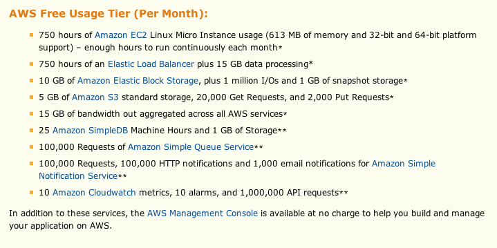

用 find 找所有的 .txt 檔
for file in `find "$1" -type f -name "*.txt"`
do
...
done
寫一個 function 來 recursive 搜尋檔案
/etc/hosts.allow , /etc/hosts.deny怎麼看程式支援 TCP Wrapper
$ ldd /usr/sbin/sshd | grep libwrap
設定檔的格式
程式名稱: 來源 IP / 網域
先看 /etc/hosts.allow 再看 /etc/hosts.deny
範例：只讓 140.112.x.x 或來自 .ntu.edu.tw 的人可以 ssh
在 /etc/hosts.allow
sshd: 140.112.0.0/16 .ntu.edu.tw
在 /etc/hosts.deny
sshd: ALL
範例：不讓 192.168.x.x 的人可以 ssh
在 /etc/hosts.allow 裡不用寫東西
在 /etc/hosts.deny
sshd: 192.168.0.0/16
ssh 進你的電腦最常用到的 Table
filter 與進入 Linux 本機的封包有關nat Network Address Translation顯示 Table 的規則
# iptables -t Table名稱 -L
# iptables-save -t Table名稱
# iptables -L
Chain INPUT (policy ACCEPT)
target prot opt source destination
Chain FORWARD (policy ACCEPT)
target prot opt source destination
Chain OUTPUT (policy ACCEPT)
target prot opt source destination
# iptables-save -t filter
# Generated by iptables-save v1.4.10 on Sat Dec 17
*filter
:INPUT ACCEPT [516:79544]
:FORWARD ACCEPT [0:0]
:OUTPUT ACCEPT [40:1454]
COMMIT
# Completed on Sat Dec 17
# iptables -F
# iptables -X
# iptables -P INPUT DROP
注意大小寫， INPUT 和 DROP 都要大寫
# iptables-save -t filter
# Generated by iptables-save v1.4.10 on Sat Dec 17
*filter
:INPUT DROP [0:0]
:FORWARD ACCEPT [0:0]
:OUTPUT ACCEPT [0:0]
COMMIT
# Completed on Sat Dec 17
/etc/hosts.allow , /etc/hosts.deny 改回來INPUT Policy 設成 DROP ，試著不讓旁邊的人用 ssh 連進來INPUT 給 DROP 之後，你應該也不能上網了，因為網頁的回應沒辦法傳進來# iptables -A [Chain名稱] [-i/-o 網路介面] [-p tcp,udp,icmp] [-s 來源IP] [--sport 來源port] [-d 目標IP] [--dport 目標port] -j [ACCEPT,DROP,REJECT,LOG]
-I 把 Rule 加在第一條-A 把 Rule 加在最後一條（最晚被執行）-j LOG 不會對封包做任何動作，會把封包記錄到 /var/log/syslog# iptables -A INPUT -i eth0 -p tcp -s 192.168.0.0/16 --dport 22 -j LOG
# iptables -A INPUT -i eth0 -p tcp -s 192.168.0.0/16 --dport 22 -j ACCEPT
記得要先寫 LOG 的 Rule ，如果順序錯了就不會有記錄
# iptables-save -t filter
# Generated by iptables-save v1.4.10 on Sat Dec 17
*filter
:INPUT DROP [31:5195]
:FORWARD ACCEPT [0:0]
:OUTPUT ACCEPT [20:3118]
-A INPUT -s 192.168.0.0/16 -i eth0 -p tcp -m tcp --dport 22 -j LOG
-A INPUT -s 192.168.0.0/16 -i eth0 -p tcp -m tcp --dport 22 -j ACCEPT
COMMIT
# Completed on Sat Dec 17
ssh (port 22) 之外，試著把 port 80 也打開# iptables -A INPUT -m state --state [INVALID,ESTABLISHED,NEW,RELATED] -j [ACCEPT,DROP,REJECT,LOG]
-m 使用模組# iptables -A INPUT -m state --state RELATED,ESTABLISHED -j ACCEPT
RELATED 由自己發出去的封包有關的
ESTABLISHED 已建立的連線利用網卡來封住來自特定機器的封包
# iptables -I INPUT -m mac --mac-source aa:bb:cc:dd:ee:ff -j DROP
iptables -F
iptables -X
iptables -P INPUT DROP
iptables -P OUTPUT ACCEPT
iptables -P FORWARD ACCEPT
iptables -A INPUT -i lo -j ACCEPT
iptables -A OUTPUT -o lo -j ACCEPT
iptables -A INPUT -m state --state RELATED,ESTABLISHED -j ACCEPT
iptables-save -t filter
# echo "1" > /proc/sys/net/ipv4/ip_forward
# iptables -t nat -A POSTROUTING -o 對外網路介面 -s 內部網路介面 -j MASQUERADE
敲門 才可以開啟特定的 port# iptables -A INPUT -p tcp --dport 6000 -m recent --set --name knock1
# iptables -A INPUT -p tcp --dport 7000 -m recent --rcheck --name knock1 -m recent --set --name knock2
# iptables -A INPUT -p tcp --dport 22 -m recent --rcheck --seconds 10 --name knock2 -j ACCEPT
# iptables -A INPUT -p tcp --dport 22 -m recent --name knock1 --remove
不用申請固定 ip

台大資訊系統訓練班 Linux 作業系統班 /
#